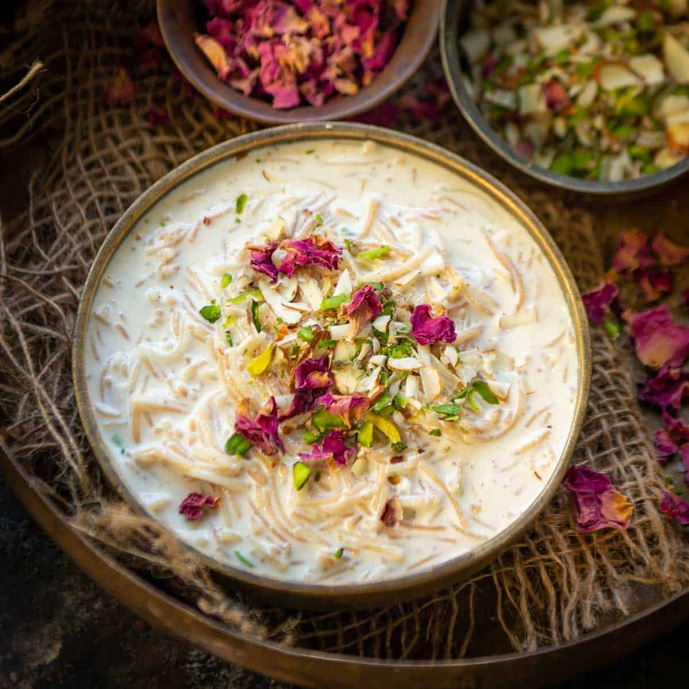

Sevaya Kheer

Description
The Marathi word Sevaya means vermicelli in the English language and called Semiya in South India. Kheer is a pudding like dish made with milk but not as thick as the western puddings and has a flowing consistency.
Ingredients
- 1 tsp ghee
- 1 cup sevaya(vermicelli)
- 1.5 cup milk
- 4-5 cashew nuts
- 3 cloves
- 4-5 raisins
- 1/2 tsp cardamom
- sugar as needed
Steps
- Melt the ghee in a deep pan on low flame
- Add the raisins,cashews and cloves
- Add Sevaya(vermicelli) and stir
- Pour milk and add sugar as per taste.
- bring to boil
- Once the sevaya(vermicelli) has softened, add cardamom, stir and serve.
- Enjoy:)